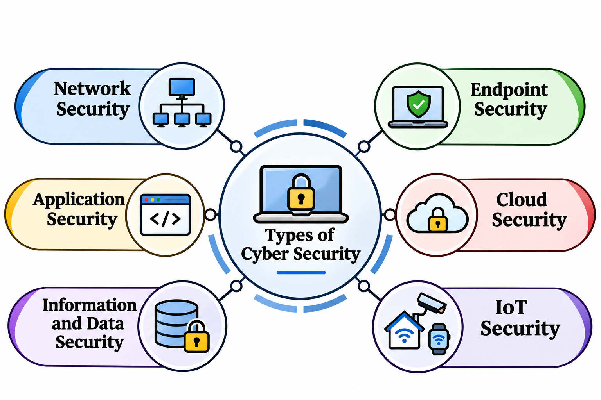

1.1 Basics of Cyber Security
1. Introduction to Cyber Security
In today's digital world, computers, smartphones, networks, and the internet are widely used in education, banking, healthcare, business, and communication. These technologies make everyday activities easier and faster, but they also introduce security risks such as data theft, online fraud, unauthorized access, and cyberattacks.
Cyber Security is the practice of protecting computer systems, networks, devices, applications, and digital information from unauthorized access, cyberattacks, damage, theft, and disruption.
The main purpose of cyber security is to keep digital systems and information safe, reliable, and accessible to authorized users.
Example: When a person uses an online banking application, cyber security measures help protect login credentials, account information, and financial transactions from unauthorized access.
2. Need and Importance of Cyber Security
Cyber security is essential for individuals, organizations, and governments because most modern activities depend on digital technologies.
The major reasons for the importance of cyber security are explained below.
1. Protection of Sensitive Information: Cyber security protects personal details, passwords, financial records, and confidential business information from unauthorized access, theft, or disclosure.
For example, banks use encryption and access controls to protect customer information.
2. Prevention of Cyberattacks: Cyber security helps prevent, detect, and respond to cyberattacks such as malware infections, phishing, ransomware, and unauthorized access.
For example, antivirus software helps identify and block malicious programs.
3. Protection of Privacy: Cyber security helps prevent the unauthorized collection, use, or disclosure of personal information.
For example, hospitals restrict access to patient records to protect medical privacy.
4. Prevention of Financial Loss: Cyberattacks can cause financial losses through online fraud, stolen banking information, and disruption of business operations.
Security measures such as multifactor authentication help reduce the risk of financial fraud.
5. Business Continuity: Organizations depend on computer systems and networks for daily operations. Cyberattacks and system failures can interrupt important services.
Cyber security helps organizations maintain operations and recover from security incidents through backups, monitoring, and recovery planning.
6. Protection of Critical Infrastructure: Essential services such as electricity, transportation, healthcare, and communication depend on digital systems.
Cyber security helps protect these services from attacks that could affect public safety and normal operations.
3. Types of Cyber Security
Cyber security includes several areas, depending on the systems, devices, and information being protected.
3.1 Network Security
Network security protects computer networks and network communication from unauthorized access, misuse, and attacks.
It uses technologies such as firewalls, intrusion detection systems, and secure network configurations.
Example: A firewall blocks unauthorized connections to a company's internal network.
3.2 Application Security
Application security protects software and applications from vulnerabilities, unauthorized access, and cyberattacks.
It involves secure coding, security testing, authentication, and regular software updates.
Example: A banking application uses secure login methods to protect customer accounts.
3.3 Information and Data Security
Information and data security protect sensitive information from unauthorized access, modification, disclosure, or loss.
Common protection methods include encryption, access controls, and data backups.
Example: A hospital uses access permissions to protect confidential patient records.
3.4 Endpoint Security
Endpoint security protects devices such as computers, laptops, smartphones, and servers from cyber threats.
It uses antivirus software, device security controls, and regular security updates.
Example: Endpoint protection software detects and blocks malicious programs on a laptop.
3.5 Cloud Security
Cloud security protects information, applications, and services hosted on cloud computing platforms.
It includes secure authentication, encryption, access management, and security monitoring.
Example: Multifactor authentication helps protect access to a cloud storage account.
3.6 Internet of Things (IoT) Security
IoT security protects internet-connected devices such as smart cameras, sensors, smart televisions, and smart home appliances.
It involves strong authentication, secure communication, and regular firmware updates.
Example: Changing the default password of a smart security camera helps prevent unauthorized access.

Upload the image to
images/1.1-types-of-cyber-security.png, or edit the image src in this HTML file.4. Common Cyber Security Challenges
Despite the availability of security technologies, protecting digital systems remains challenging because cyber threats and technologies continue to change.
1. Evolving Cyber Threats: Cybercriminals continuously develop new attack methods and modify existing techniques to bypass security measures.
2. Human Errors: Weak passwords, accidental sharing of confidential information, and unsafe browsing habits can expose systems to security risks.
3. Outdated Software: Software that does not receive regular security updates may contain vulnerabilities that attackers can exploit.
4. Increasing Number of Connected Devices: The growing use of smartphones, cloud services, and IoT devices creates additional systems and connections that require protection.
5. Shortage of Skilled Professionals: Organizations may face difficulties in finding trained cyber security professionals to monitor systems, identify vulnerabilities, and respond to incidents.
5. Basic Cyber Security Safety Practices
Individuals and organizations can reduce cyber security risks by following basic security practices.
1. Use Strong Passwords: Create long, unique passwords for different accounts to reduce the risk of unauthorized access. Avoid using easily guessed information such as names or birthdates.
2. Enable Multifactor Authentication: Use an additional verification method, such as an authenticator application or security key, to provide extra protection even if a password is stolen.
3. Update Software Regularly: Keep operating systems, applications, and security software updated to fix known vulnerabilities and improve protection against attacks.
4. Lock Your Devices: Protect computers and smartphones using passwords, PINs, or biometric locks to prevent unauthorized access.
5. Avoid Suspicious Links and Downloads: Do not open unknown links, unexpected email attachments, or software downloads from untrusted sources.
6. Maintain Regular Data Backups: Create regular backups of important information and store them securely to support recovery after data loss or cyberattacks.
7. Log Out from Shared Devices: Always sign out of personal accounts after using public or shared computers to prevent others from accessing private information.
8. Follow Access Control Practices: Provide users with only the permissions necessary for their work and restrict unauthorized access to sensitive systems and information.